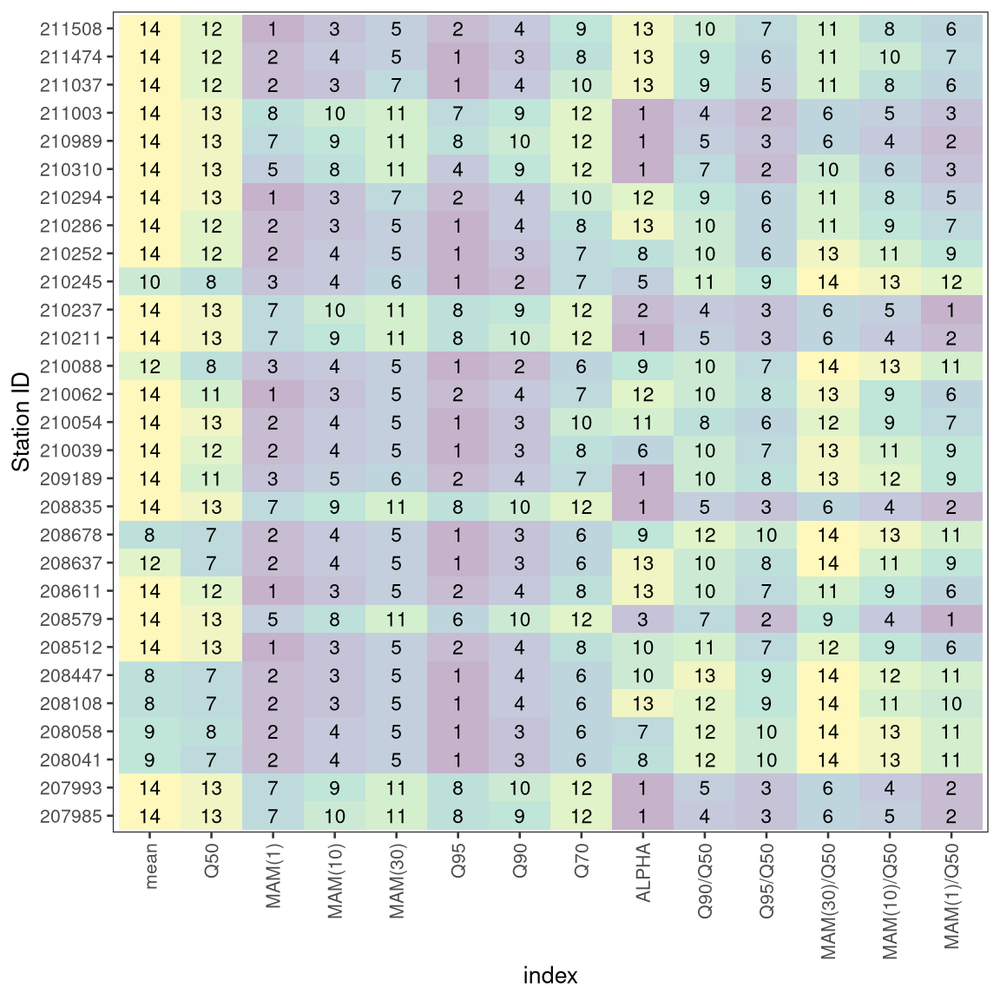

Rank and correlation coefficients: Worked example 5.8
Loading the Data
library(tidyverse)
library(hydroDrought)
r <- regional %>%
select(id, river, station, data = discharge) %>%
print()
## # A tibble: 29 x 4
## id river station data
## <chr> <chr> <chr> <list>
## 1 210039 Rabnitz Piringsdorf <tibble [16,436 × 2]>
## 2 210054 Rabnitz Mannersdorf <tibble [18,262 × 2]>
## 3 210062 Stoob Oberpullendorf <tibble [18,262 × 2]>
## 4 210088 Wulka Wulkaprodersdorf <tibble [18,262 × 2]>
## 5 210211 Lafnitz Dobersdorf <tibble [23,741 × 2]>
## 6 210237 Pinka Woppendorf <tibble [23,741 × 2]>
## 7 210245 Tauchenbach Altschlaining <tibble [18,262 × 2]>
## 8 210252 Tauchenbach Hannersdorf <tibble [23,741 × 2]>
## 9 210286 Strem Güssing <tibble [14,610 × 2]>
## 10 210294 Strem Heiligenbrunn <tibble [23,741 × 2]>
## # … with 19 more rows
Indices
# list of functions we applied to each station
f <- list(
mean = function(x, ...) mean(x),
Q50 = function(x, ...) lfquantile(x, exc.freq = 0.5),
`MAM(1)` = function(x, t) mean_annual_minimum(discharge = x, time = t, n = 1),
`MAM(10)` = function(x, t) mean_annual_minimum(discharge = x, time = t, n = 10),
`MAM(30)` = function(x, t) mean_annual_minimum(discharge = x, time = t, n = 30),
Q95 = function(x, ...) lfquantile(x, exc.freq = 0.95),
Q90 = function(x, ...) lfquantile(x, exc.freq = 0.9),
Q70 = function(x, ...) lfquantile(x, exc.freq = 0.7),
ALPHA = function(x, t, ...) recession(time = t, discharge = x)
)
indices <- r %>%
transmute(
id,
indices = map(data, ~map_df(f, exec, x = .x$discharge, t = .x$time))
) %>%
unnest(indices)
# derived indices
indices <- indices %>%
mutate(
`Q90/Q50` = Q90/Q50,
`Q95/Q50` = Q95/Q50,
`MAM(30)/Q50` = `MAM(30)`/Q50,
`MAM(10)/Q50` = `MAM(10)`/Q50,
`MAM(1)/Q50` = `MAM(1)`/Q50,
)
Table 5.11 Flow indices for a subset of the Regional Data Set.
## # A tibble: 29 x 15
## id mean Q50 `MAM(1)` `MAM(10)` `MAM(30)` Q95 Q90 Q70 ALPHA
## <chr> <dbl> <dbl> <dbl> <dbl> <dbl> <dbl> <dbl> <dbl> <dbl>
## 1 2100… 0.615 0.443 0.144 0.179 0.220 0.132 0.178 0.31 0.248
## 2 2100… 0.913 0.68 0.274 0.320 0.373 0.257 0.311 0.49 0.545
## 3 2100… 0.613 0.429 0.129 0.164 0.216 0.14 0.179 0.305 0.472
## 4 2100… 0.548 0.414 0.197 0.227 0.262 0.15 0.191 0.299 0.419
## 5 2102… 6.47 4.91 2.43 2.75 3.08 2.44 2.83 3.86 0.261
## 6 2102… 2.30 1.59 0.596 0.804 0.939 0.66 0.8 1.2 0.388
## 7 2102… 0.409 0.348 0.166 0.183 0.201 0.124 0.159 0.255 0.196
## 8 2102… 0.692 0.52 0.209 0.246 0.293 0.18 0.236 0.39 0.401
## 9 2102… 1.08 0.513 0.168 0.199 0.263 0.167 0.216 0.368 0.748
## 10 2102… 1.47 0.67 0.211 0.262 0.334 0.214 0.271 0.47 0.597
## # … with 19 more rows, and 5 more variables: `Q90/Q50` <dbl>, `Q95/Q50` <dbl>,
## # `MAM(30)/Q50` <dbl>, `MAM(10)/Q50` <dbl>, `MAM(1)/Q50` <dbl>
Ranks
long <- indices %>%
pivot_longer(cols = -id, names_to = "index") %>%
mutate(index = factor(index, levels = setdiff(colnames(indices), "id")))
ranks <- long %>%
group_by(id) %>%
mutate(
rank = rank(value, ties.method = "min")
)
ggplot(ranks, aes(x = index, y = id, fill = rank, label = rank)) +
geom_tile() +
geom_text(size = 3) +
scale_fill_viridis_c(alpha = 0.3) +
labs(y = "Station ID") +
theme(panel.grid = element_blank(),
legend.position = "none",
axis.text.x = element_text(angle = 90, hjust = 1, vjust = 0.5))

Pearson correlation
library(corrplot)
x <- indices %>%
select(-id)
M <- cor(x, method = "pearson")
res1 <- cor.mtest(x, method = "pearson", conf.level = .95)
col2 <- colorRampPalette(c("#67001F", "#B2182B", "#D6604D", "#F4A582",
"#FDDBC7", "#FFFFFF", "#D1E5F0", "#92C5DE",
"#4393C3", "#2166AC", "#053061"))
corrplot(M, type = "upper",
col = tail(head(col2(200), -30), -30),
tl.cex = 0.8, addCoef.col = "grey10",
p.mat = res1$p, insig = "pch",
order = "hclust", addrect = 3, rect.col = "navy",
pch.cex = 2,
number.cex = .7, tl.col = "black")
Spearman (rank) correlation
M <- cor(x, method = "spearman")
res1 <- cor.mtest(x, method = "spearman", conf.level = .95)
corrplot(M, type = "upper",
col = tail(head(col2(200), -30), -30),
tl.cex = 0.8, addCoef.col = "grey10",
p.mat = res1$p, insig = "pch",
order = "hclust", addrect = 3, rect.col = "navy",
pch.cex = 2,
number.cex = .7, tl.col = "black")